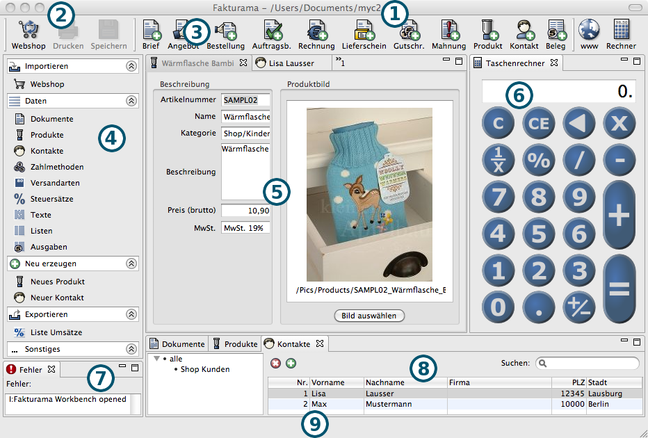

Die Programmoberfläche ist in verschiedene Bereiche eingeteilt.
Das Fakturama Arbeitsverzeichnis wird in der Titelleiste angezeigt.
Viele Kommandos können über die Menüleiste aufgerufen werden. Manche sind zusätzlich auch in der Werkzeugleiste oder der Navigationsleiste verfügbar. Einige nur hier.
Siehe Menüleiste
Die Kommandos, die am häufigsten benutzt werden sind zusätzlich in der Werkzeugleiste vorhanden.
Siehe Werkzeugleiste
Die wichtigsten Vorgänge können aus der Navigationsleiste gestartet werden. Übersichtlich mit Icons versehen und in Gruppen sortiert. Das Verhalten der Navigationsleiste kann in den Einstellungen festgelegt werden.
Siehe Navigationsleiste
Jedes Produkt, jeder Kontakt oder jedes Dokument kann in einem Editorfenster geöffnet und bearbeitet werden. Gleichzeitig können mehrere Editoren geöffnet sein.
Siehe Editorfenster
Ein eingebauter Taschenrechner.
Siehe Taschenrechner
Das Fehlerfenster wird nur bei einem internen Fehler angezeigt und bleibt ansonsten unsichtbar.
Siehe Fehlerfenster
Hier wird tabellarisch eine Übersicht aller Produkte, Kontaktadressen oder Dokumente angezeigt. Ein Eintrag kann angewählt und im Editorfenster zum Bearbeiten geöffnet werden.
Siehe Übersichtsfenster
Die Statusleiste kann den Zustand verschiedener Programmabläufe darstellen.